Digital Property Acquisition Platform
Designing for National Homeownership
Saudi Arabia's Vision 2030 set an ambitious goal: raise national homeownership to 70% by 2030. A government-backed property developer needed a unified digital ecosystem to accelerate this vision. I led product strategy and design to create a scalable, bilingual platform that connected property discovery, financing, and community living—generating $1B in online sales within 12 months.
Role Lead Product Designer + Design Systems Strategist
Client type Government-Backed Enterprise
High-level impact $1B revenue; 15× conversion lift
Challenge
Saudi Arabia's homeownership rate lagged behind Vision 2030 targets. The barrier wasn't aspiration—it was friction. The digital experience for discovering, financing, and managing properties was fragmented across three disconnected product lines.
Our client needed to:
- Unify three separate real estate products into a single Super App (property discovery, financing, community management)
- Build bilingual at scale (Arabic–English) respecting RTL/LTR complexity without design rework
- Establish trust in a high-stakes category where service quality and transparency drive decisions
- Launch rapidly without sacrificing design rigor or research
- Support complex customer journeys from search → financing → move-in → community management
The design challenge: How do you remove friction from the homeownership journey while respecting cultural context, language complexity, and regulatory constraints — and do it fast?
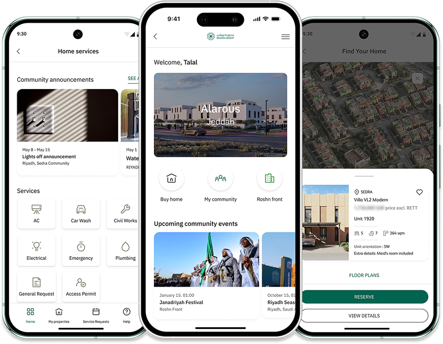
Discovery & Insights
Understanding the Homeowner's Journey
I led a focused discovery phase to understand how Saudis manage and aspire to own homes:
- Behavioral research revealed that home maintenance is the most in-demand but least trusted service category
- User interviews showed that buyers want clearer pricing, reliable service quality, and transparent communication
- Competitive benchmarking demonstrated that trust, convenience, and seamless post-service support are critical value drivers
Key insight: Homeownership isn't just a transaction—it's a relationship. Users need support before purchase, during the transaction, and after move-in.
This insight reshaped the entire information architecture from “search → buy” to “discover → finance → manage → community.”
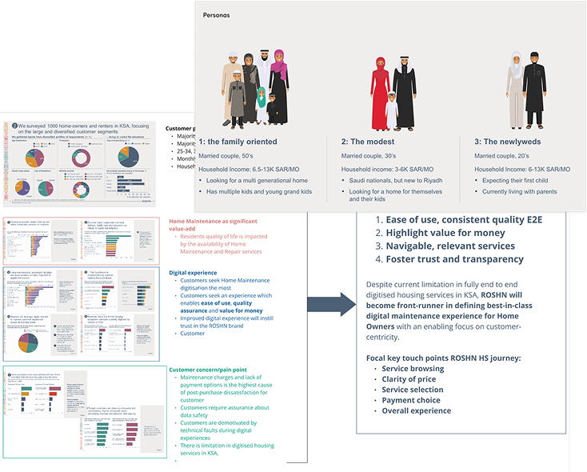
Approach
Rather than designing three separate products, I pursued a unified platform strategy that treated property acquisition as a continuous customer journey:
- Research-Driven IA: Mapped user flows across onboarding, property setup, service discovery, scheduling, and aftercare. Identified friction points and streamlined decision paths to reduce complexity.
- Atomic Design System at Scale: Built a 3,000+ component design system from the ground up. Structure included atoms (typography, color, spacing), molecules (buttons, inputs, cards), organisms (property cards, dashboards), templates, and pages—all optimized for both LTR and RTL.
- Bilingual-First Thinking: Each component was designed in both English and Arabic with proper RTL support, dynamic text-scaling, and culturally appropriate iconography and tone.
- Design-to-Development Parity: Worked closely with front-end engineers to translate Figma components into a live Storybook environment, ensuring no drift between design and code.
This systematic approach enabled rapid deployment while maintaining visual consistency across the entire ecosystem.
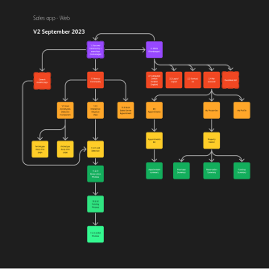
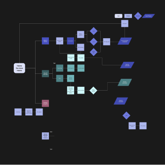
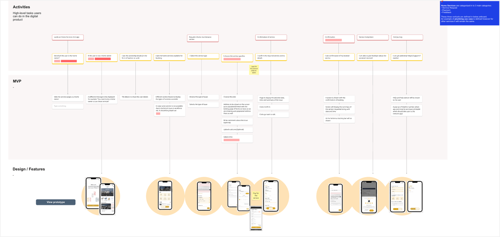
Deliverables
What I Designed
- Unified bilingual platform (Arabic–English) connecting property search, community living, and home management
- 3,000+ component atomic design system
- Atoms: typography, color, spacing, tokens
- Molecules: buttons, inputs, cards
- Organisms: dashboards, property cards
- Templates & pages (LTR/RTL ready)
- Accessibility compliance (WCAG 2.1 AA, light/dark, scaling)
- Component documentation with code + props
- Visual regression testing to prevent UI drift
- Design–dev workflow for collaboration
- Super app architecture unifying 3 products


Bilingual Design Strategy
Designing for dual language contexts required systematic planning beyond translation. Arabic and English have fundamentally different typographic needs, reading patterns, and spatial requirements.
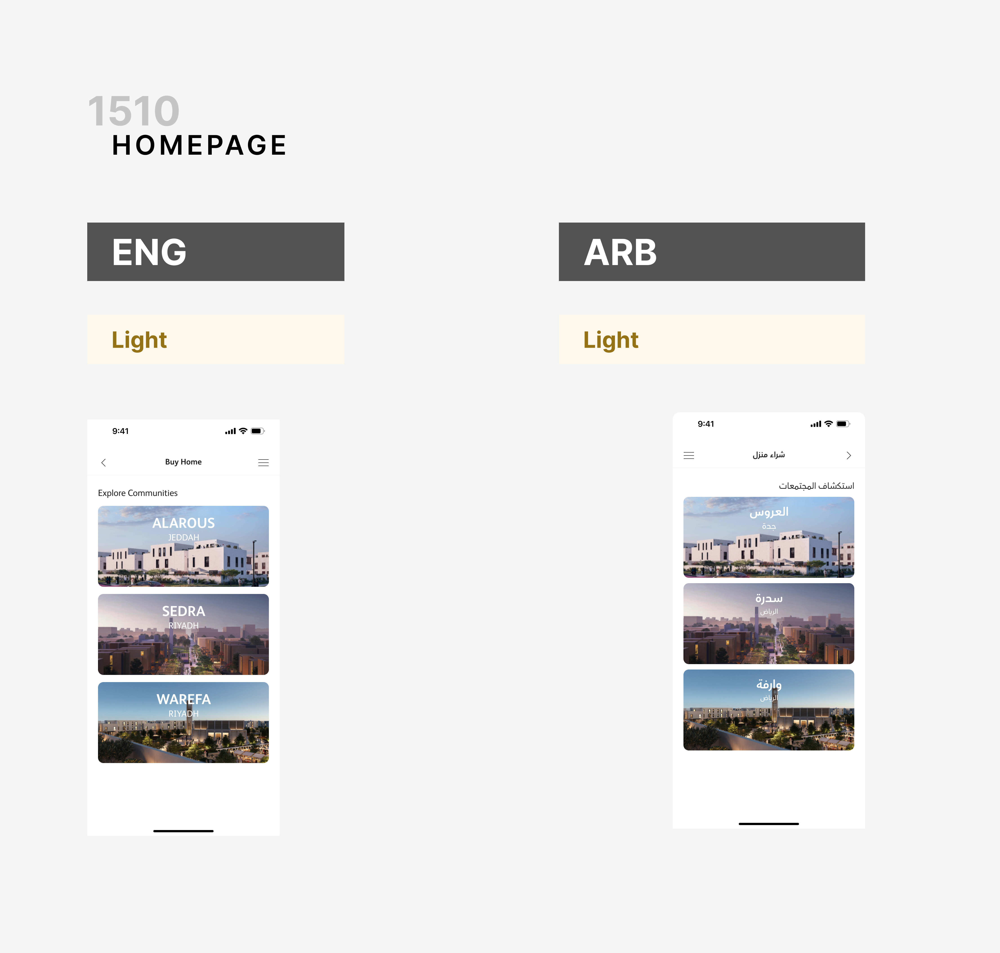


Key bilingual considerations:
- Directional flexibility: LTR (English) and RTL (Arabic) layouts mirrored within the component library
- Typography parity: Separate font stacks optimized for each language
- Content expansion: Arabic expands 20–30% vs English
- Icon localization: Directional icons flipped + culturally reviewed
- Seamless language toggling without layout shifts
Result: A design system treating bilingualism as a core architecture principle — not an afterthought.

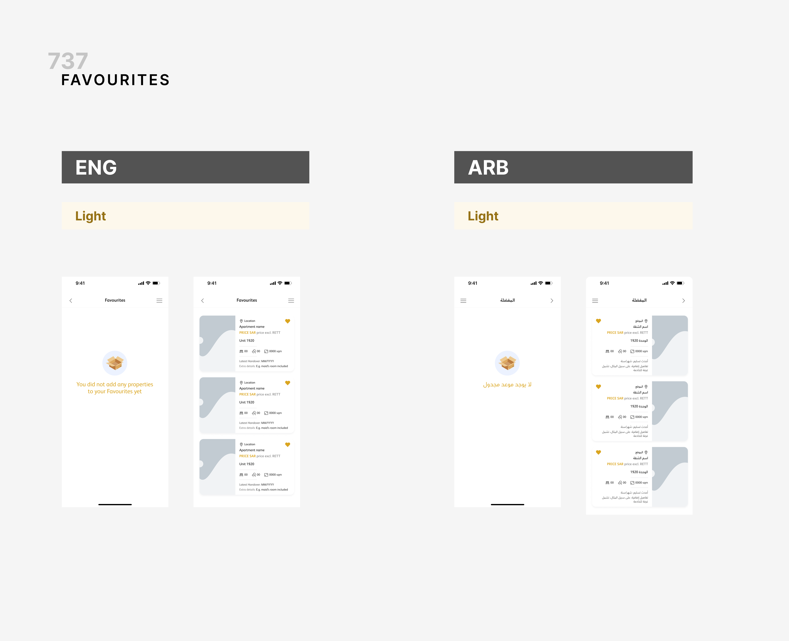
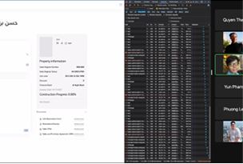
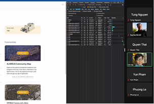
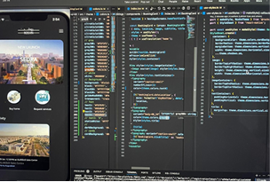
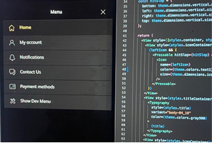
OUTCOMES
What I Designed
- $1B in online sales generated within 12 months of launch
- 15× increase in lead conversion (from baseline to post-launch)
- 20% increase in inquiry rates within 3 months
- 10,000 registered new users across Saudi Arabia in first quarter
- 35% reduction in design-to-development turnaround (enabled by design system)
- Multiple autonomous squads able to design and ship independently
- Brand valuation: Platform recognized as Saudi Arabia's most valuable real estate brand, exceeding $1B (Brand Finance, 2025)
What began as a design-led transformation has evolved into a national benchmark for innovation and customer experience in real estate.
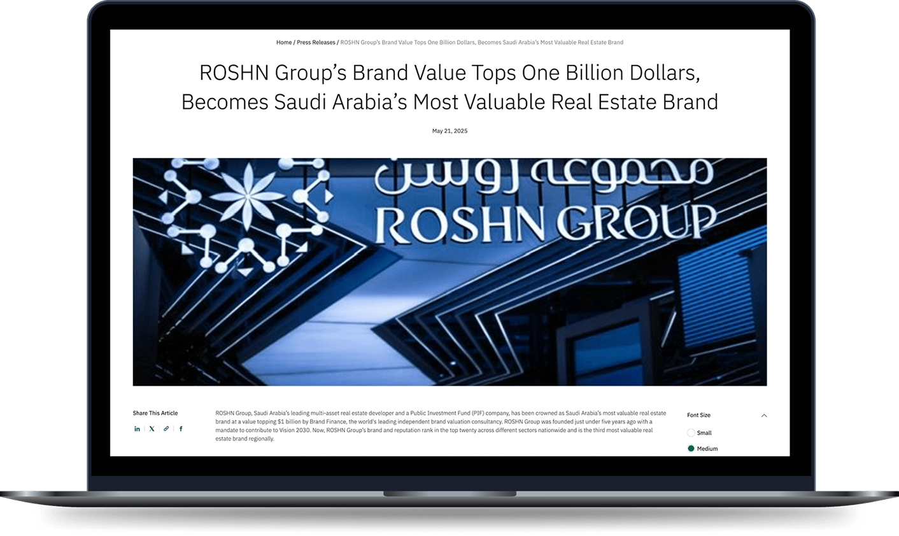
REFLECTION
What This Taught Me
This project demonstrated the power of *systematic design thinking at scale.*The 3,000-component design system wasn't just a tool—it was a strategic asset that enabled the client to move from a fragmented product portfolio to a unified digital ecosystem. It proved that design systems are most valuable when they're built for *organizational ambition*, not just visual consistency.
The other insight: **Design operates at multiple levels.** You design the pixels, yes—but you also design the *process* by which teams ship. By creating a transparent, collaborative design-dev workflow, we accelerated not just time-to-market but also organizational confidence in design as a strategic lever.
The platform's success (and its $1B+ valuation) came from treating design as integral to the business strategy, not decorative.